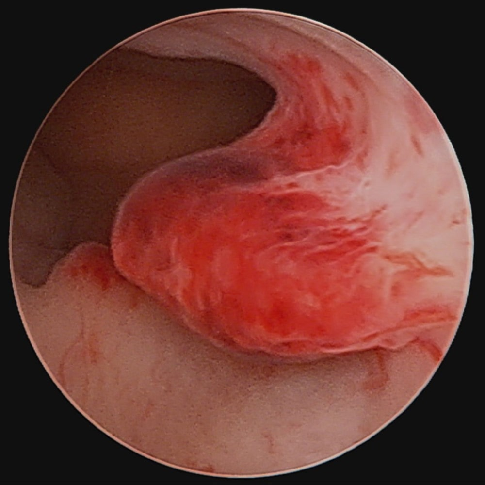
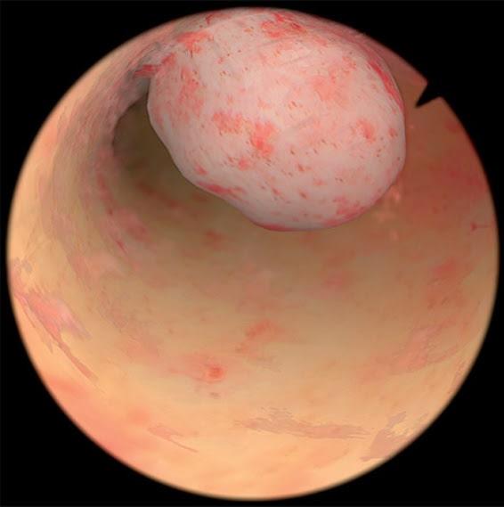

Основні захворювання, які лікує доктор
Серед патологічних процесів порожнини матки найбільш часто зустрічаються: поліп порожнини матки, гіперплазія ендометрію, підслизова лейоміома матки, внутрішній ендометріоз, синехії порожнини матки.
Гіперплазія ендометрію - це патологічне розростання слизової оболонки матки з переважним ураженням залозистих структур.
Відповідно до класифікації ВООЗ до гіперпластичних процесів ендометрія відносяться гіперплазія, поліпи і атипові зміни слизової оболонки тіла матки.
Поліпи порожнини матки зазвичай розвиваються внаслідок проліферації залоз базального шару ендометрія. Спочатку розростаються залози і навколишня їх строма утворює поліповідний виріст на широкій основі, пізніше формується ніжка різної товщини, до складу якої можуть входити м'язові волокна.

Поліпи можуть бути причиною безпліддя. Але основна небезпека поліпа полягає в можливості його трансформації в злоякісну пухлину з розвитком раку.
Клінічно проявляються поліпи міжменструальними мажучіми кров'яними виділеннями з статевих шляхів, порушеннями менструального циклу, можуть протікати безсимптомно.

Встановлюється діагноз поліпа порожнини матки на УЗД. Поліпи можуть бути одиничними і множинними, найчастіше розташовуються в області дна і трубних кутів тіла матки.
При первинному виявленні рекомендується повторити УЗД після закінчення чергової менструації, і, при збереженні поліпа, проводиться його видалення гістероскопічного шляхом.
При невеликому розмірі поліпа (до 2-2,5 см), можливо його видалення ультратонким гістероскопом, введення якого в порожнину матки не вимагає розширення цервікального каналу. Даний метод актуальний у жінок, що не народжували, так як дозволяє видалити поліп без нанесення травми, і є безпечним для подальшої можливості вагітності і виношування.
При великих розмірах поліпа порожнини матки (більше 3 см), необхідності видалення вузла, синехий порожнини матки використовується біполярний гістерорезектоскоп.
У порівнянні з класичним (монополярним) гістероскопом даний інструмент працює в фізіологічному розчині, що дозволяє збільшити час операції і ретельно видалити патологічний процес. Дає можливість видалення більших вузлів (до 6 см).